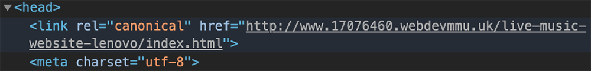
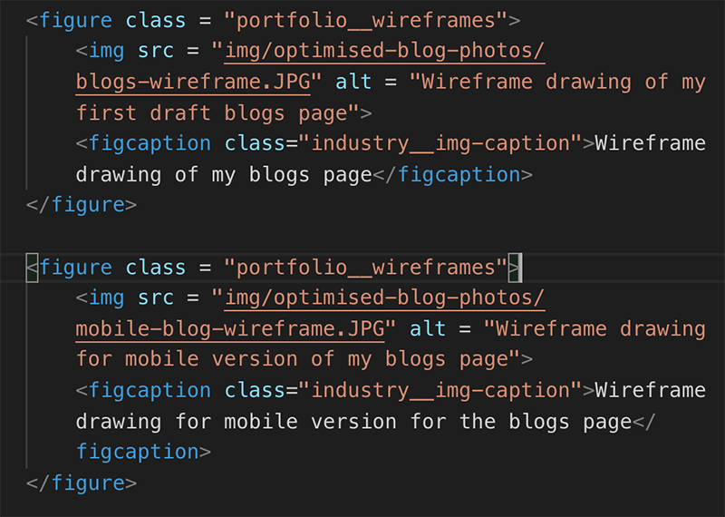

Performance, Optimisation, SEO (Search Engine Optimisation). The steps I took provide a pleasant experience for people on my website and rank well on search engines.
Performance and optimisation on a website, two key factors that could determine whether your website is even seen by the public on search engines. Or, factors that determine whether a user lands on your website but bounces right away due to a slow loading and under-performing site. Find out in this blog post my approaches to ensure that my website is visible on search engines – mainly Google – and my methods to ensure the site runs fast.
SEO (Search Engine Optimisation) integration
The first and most simple approach that you can do to improve visibility on search engines is adding a meaningful and unique title tag along with a descriptive meta description of each page. Once someone searches something on Google, your page title and meta description are the first thing they see so if they’re not unique and informative, that person might not click on your website.
The meta description for my home page
Although Google does not rank you directly on your title and meta descriptions, they do use click-through-rates (CTR) as a way of working out whether your website is good or not (Heijmans, 2019). So, the better the title and meta descriptions, the more likely someone will click through to your website, resulting in you moving up the Google ranks.
This image shows what a person sees after an organig search on Google - which is the title of the page and meta description.
Another method to improve the SEO on your website is to add a canonical link to each HTML page. A Canonical link is a HTML element that tells search engines that a specific URL represents the main copy of that page (Moz, no date). The link must be an active and live link, so this technique is added once the website is live, just like in the example below.

This is the Canonical link I used for an old project that gave information in live music in Manchester.
Coding
A good and important practice you should follow on every project you build, is adding alt descriptions to images on your website. Not only is it good for SEO reasons, but alt descriptions are good for accessibility as it allows a screen reader to read the description to people who can’t see that image. I try to be descriptive as possible when providing alt text for the images on my website.

An example of alt description used on the blog wireframe drawings from the portfolio development blog.
Before you make your website live, an important tool to use is the W3C Markup Validation Service to check all your HTML files and CSS files, as they will flag up any errors in your code that you have missed. I certainly take advantage of this service in all my projects; you’d be surprised of the silly mistakes you can make.
The results from validating my home page on W3C Markup Service website
Optimisation
There is nothing worse than opening a website either on your desktop or mobile and it takes a while to load – most of the time you simply click away from the site in frustration. A popular reason for slow loading websites is due to large image files that have not been optimised for the web, as Jehl (2014) stated, an average webpage would be around 1.7mb(megabytes) with images taking up 1.1mb of that. I do not want potential employers and users clicking away from my website due to slow loading images, so I used tools such as Adobe Bridge and Adobe Photoshop to optimise my images to shave their file size down significantly.